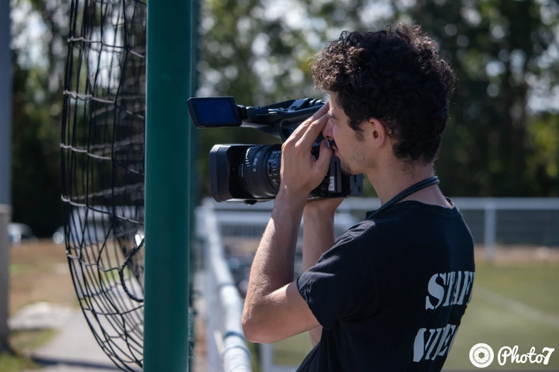
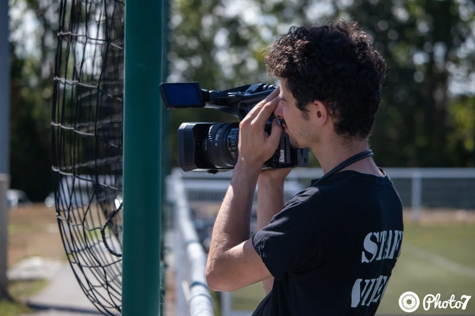

MAXIME MOSHFEGHI
Étudiant en sciences du numérique à l'n7
 

Un long paragraphe
Le soleil se levait lentement à l'horizon, répandant ses rayons dorés sur la vallée endormie. Les oiseaux entamaient leur symphonie matinale, tandis que la brise légère caressait doucement les feuilles des arbres. Dans ce décor idyllique, une jeune femme se promenait, les yeux perdus dans l'immensité du paysage.
Elle était en quête d'aventure, de découvertes et de nouveaux horizons. Son cœur palpitait d'excitation à l'idée de l'inconnu qui l'attendait. Chaque pas qu'elle faisait la rapprochait un peu plus de son destin, un destin qu'elle avait décidé de forger de ses propres mains.
Le chemin qu'elle empruntait était parsemé d'obstacles, mais elle ne reculait pas devant les défis. Elle avait une détermination inébranlable, une force intérieure qui la poussait à aller de l'avant, peu importe les difficultés.
Au fur et à mesure de ses aventures, elle rencontrait des personnages fascinants, des êtres aux histoires extraordinaires. Chaque rencontre était une leçon de vie, une occasion de grandir et d'apprendre. Elle découvrait de nouvelles cultures, de nouvelles coutumes, et s'enrichissait de ces expériences uniques.
Parfois, la solitude la saisissait, mais elle trouvait du réconfort dans les étoiles qui brillaient dans le ciel nocturne. Elle se sentait connectée à l'univers, à quelque chose de plus grand qu'elle-même. C'était comme si chaque étoile lui murmurait des secrets, des réponses aux questions qui la hantaient.
Et ainsi, elle continuait son voyage, avançant sur le chemin sinueux de la vie. Elle ne savait pas ce que l'avenir lui réservait, mais elle avait confiance en son instinct, en sa capacité à surmonter les épreuves.
Finalement, après des mois d'aventures, elle atteignit son but ultime. Elle se tenait au sommet d'une montagne, dominant un paysage à couper le souffle. Tout était parfaitement silencieux, comme si le monde retenait son souffle devant tant de beauté.
Dans cet instant magique, elle réalisa que le véritable voyage était celui qui se déroulait à l'intérieur d'elle-même. Chaque expérience, chaque rencontre, chaque épreuve avait forgé sa personnalité, avait révélé sa véritable nature.
Et ainsi, elle comprit que la plus grande aventure était celle de se découvrir soi-même, de se surpasser et de vivre pleinement, en accord avec ses rêves et ses aspirations les plus profondes.
Ce texte est une création aléatoire générée par l'IA et ne correspond à aucune histoire ou personne réelle.
Ceci est un paragraphe
Ceci est le contenu de mon premier paragraphe,
dont le contenu est particulièrement long.
Ceci est le contenu de mon deuxième paragraphe
Lien vers vidéo choréeLien vers page interne
Lien vers l'ancre
Ouvrir la page 2 dans un nouvel onglet : Ouvrir la page 2 dans un nouvel onglet
Ce paragraphes contient une image (avec miniature) :